容量
530ml（Lサイズ）※355mlのSサイズもあり
カラー
チャコール
本体素材
100% フードグレードシリコーン（BPAフリー）
キャップ
18/8 ステンレススチール
素材耐熱
-55℃〜260℃ ※飲み物は60℃以下を推奨
お手入れ
食洗機OK
認証
FDA・LFGB
正規保証
日本総代理店 株式会社ＴＳマネジメント
保証書付き
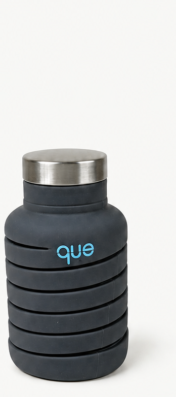
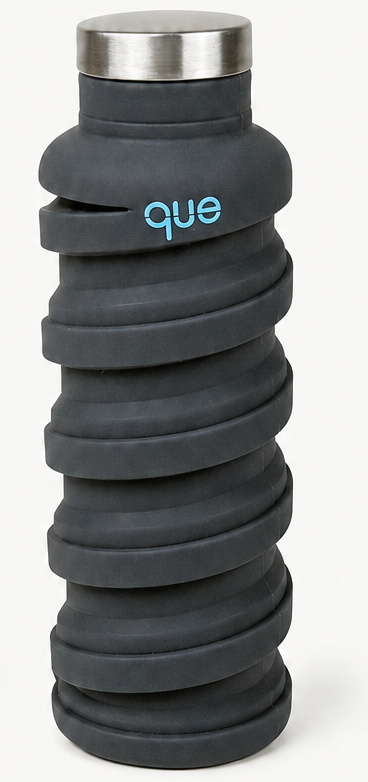
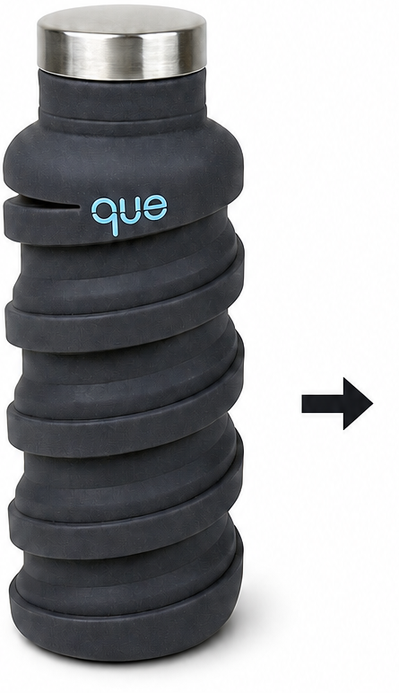
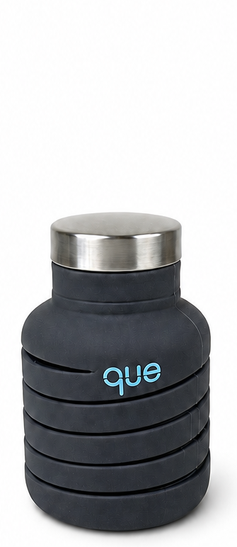
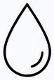
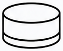
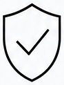
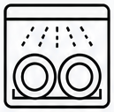
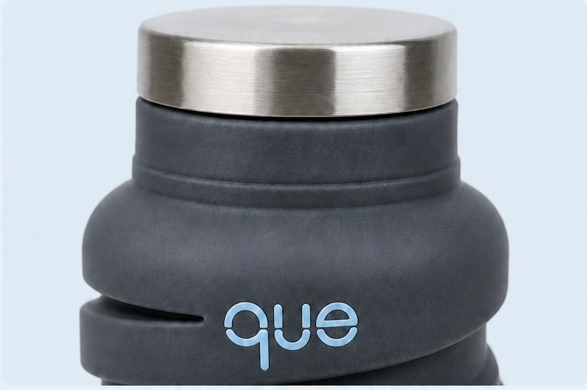
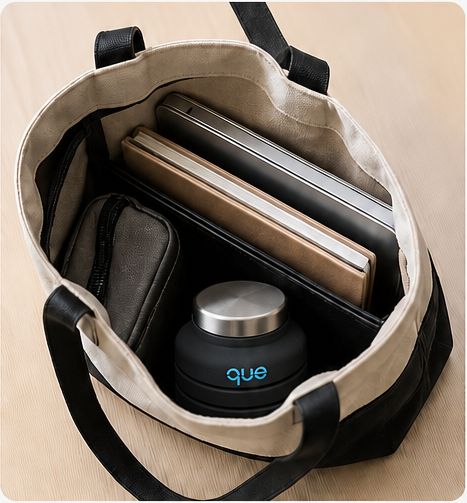
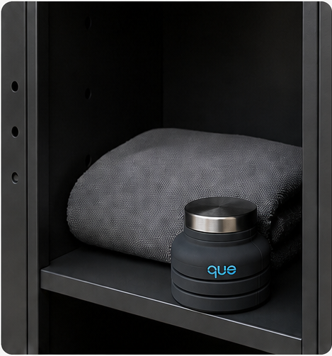
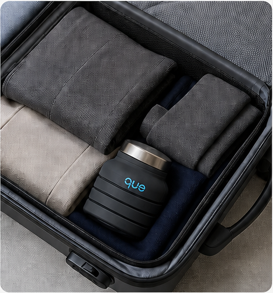
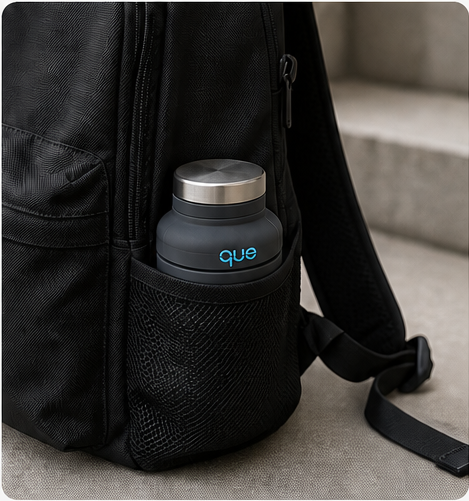
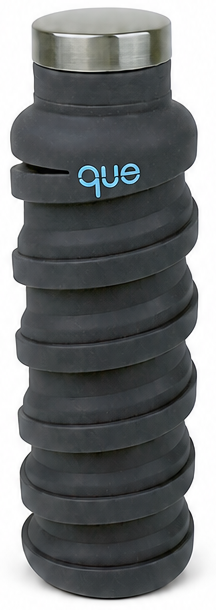
飲みおわったら
半分になる
伸ばして530ml、たたんで高さ約半分
バッグの中で邪魔をしない伸縮シリコーンボトル
BPAフリー
食洗機OK
プラスチック不使用
que Bottle を手に入れる
行きは相棒
帰りはただの荷物
空になったボトルが、バッグの中で
いちばん場所を取ってる
ペットボトルを毎日買うのは、
お金もゴミももったいない
重いステンレスボトルは、
結局家に置いて出てしまう
マイボトルが続かない理由は
意志じゃなくて「帰り道のかさばり」でした
秘密は螺旋（らせん）
ボディは太いリングが螺旋状に連なる独自のスパイラル構造
キャップを外して上から押すだけでリングが入れ子に畳まれ、高さはおよそ半分に
のばす たっぷり530ml
たたむ 高さ約半分、バッグの底へ
畳んだ姿も崩れない設計だからそのままデスクに置ける
口に入れるものだから
素材から選び抜いた
本体は100%フードグレードシリコーン
プラスチック不使用・BPAフリー
キャップはキッチングレードの
18/8 ステンレススチール
FDA・LFGB 認証取得
子どもの飲み物にも使える
使い終わったら食洗機へ
丸洗いOK
マットな質感のチャコール。ロゴはワンポイントの水色
毎日にも遠出にも
通勤
午後に飲み切ったら
畳んで小さめバッグへ
ジム・ヨガ
帰りのロッカーで
かさばらない
旅行・出張
行きのスーツケースでは
畳んで隙間に
アウトドア
空になったらリュックの
サイドポケットへ
先に苦手なことを
お伝えします
飲み物は60℃以下で。熱い飲み物の持ち運びには向きません
炭酸飲料は入れられません
気持ちよく使うためのお願い
はじめて使う前に約15分の煮沸を（製造時のにおいを取るため）
満杯にはせず上から2cmほど空けてお使いください
それでも「軽くて帰りは小さくなる」が欲しいあなたのためのボトルです
日本正規品。保証書付き
帰り道の荷物を
半分に
参考価格 3,000円台
※本ページは架空のLPサンプルです。価格・販売条件は例示です。
que Bottle を手に入れる
日本正規品・保証書付き